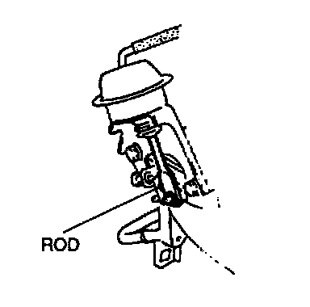
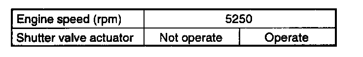

Variable Induction System: Testing and Inspection
VICS Operation Inspection1. Start the engine.

2. Verify that the rod of the VICS shutter valve actuator is pulled.
3. If the rod is not pulled, do as follows.
1. Stop the engine.
2. Connect the NGS tester to DLC-2.
3. Verify that diagnostic trouble code No. P1523 is not displayed. If code No. P1523 is shown, carry out troubleshooting of the code No. P1523.
4. If diagnostic trouble codes are not shown, do as follows.
1. Start the engine and run it at idle.
2. Select the SIMULATION TEST function on the NGS display.
3. Turn the VICS solenoid valve from on to off by using the "VICS V" and inspect if operation sound of the solenoid valve is heard.
4. If the operation sound is heard, inspect the following.
^ Loose or damaged vacuum hose and vacuum chamber
^ Shutter valve actuator
5. If the operation sound is not heard, inspect the following.
^ VICS solenoid valve
4. Inspect the rod operation under the following conditions.

Rod operation
5. If the rod operation is not as specified, do as follows.
1. Stop the engine.
2. Connect the NGS tester to DLC-2.
3. Verify that diagnostic trouble code No. P1523 is not displayed. If code No. P1523 is shown, carry out troubleshooting of the code No. P1523.
4. If diagnostic trouble codes are not shown, do as follows.
1. Start the engine and run it at idle.
2. Select the SIMULATION TEST function on the NGS display.
3. Turn the VICS solenoid valve from on to off by using the "VICS V" and inspect if operation sound of the solenoid valve is heard.
4. If the operation sound is heard, inspect the following.
- Shutter valve actuator
5. If the operation sound is not heard, inspect the following.
- VICS solenoid vale
NOTE:
- The shutter valve actuator rod extends for five seconds after the engine is started.